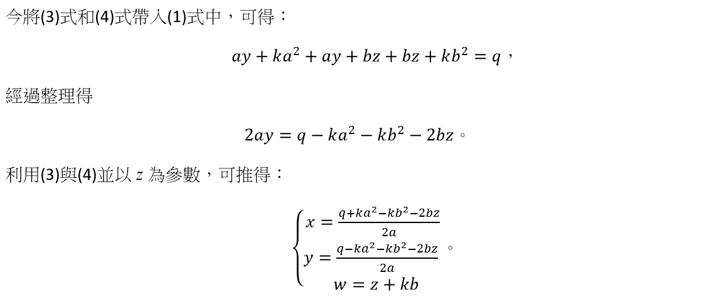
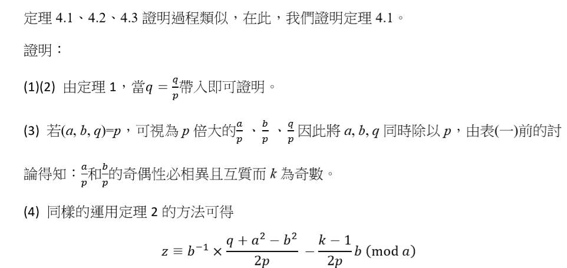

棋換世界──探討利用特定向量從原點移動至(q,0)的可行性及解
組員:蔡維彬、盧奕辰、謝杰穎
摘要
本研究將探討在直角坐標中,如何將物體從原點移動若干次至(q, 0)。而移動方式只能為四種向量(a, b), (a,−b), (b, a), (b, −a)及其反方向量的組合,其中 a, b, q 為正整數。我們發現如果有解,則這四種向量及其反方向量的移動次數會互相影響。未來,我們希望能將研究從平面推廣成空間。
研究動機
本研究發想自 1996 年 IMO 的第 1 題[1]:ABCD 是一個長寬分別是 AB=20, BC=12 的長方形板。將此長方形板分割為 20×12 個格子狀的單位小方格,r 為一給定的正整數,一個銅幣在此板上每移動一次的規則為:銅幣可從一個小方格內移動到另一個小方格內的充分必要條件是這兩個小方格的中點間的距離為 √r。現在目標是把一個在含頂點 A 的小方格內的銅幣經過若干次移動後到達含頂點 B 的小方格內,如圖 1。
(一) 證明 r 是 2 的倍數或者 3 的倍數時,此目標無法達成;
(二) 證明當 r=73 時,此目標可以達成;
(三) 當 r=97 時,問此目標能否達成?
我們將去除長方形條件的限制,聯想到其他問題:「在直角座標平面上,將物體從原點(0, 0)移動若干次至(q, 0),移動方式只能為四種向量(a, b), (a, −b), (b, a), (b, −a)及其反方向量的線性組合,探討移動的可行性及各個向量移動次數的關係。」便從這個問題開始進行研究。

研究目的
探討直角坐標中,在移動方式只能為四種向量(a, b), (a, −b), (b, a), (b, −a)及其反方向量的條件下將物體從原點移動若干次至(q, 0)的可行性,並討論四個向量移動次數的關係,其中 a, b, q 為正整數。
研究器材
紙、筆、電腦
研究過程
IMO 原題:
ABCD 是一個長寬分別是 AB=20, BC=12 的長方形板。將此長方形板分割為 20×12 個格子狀的單位小方格,r 為一給定的正整數,一個銅幣在此板上每移動一次的規則為:銅幣可從一個小方格內移動到另一個小方格內的充分必要條件是這兩個小方格的中點間的距離為√r。現在目標是把一個在含頂點 A 的小方格內的銅幣經過若干次移動後到達含頂點 B 的小方格內。
(一) 證明 r 是 2 的倍數或者 3 的倍數時,此目標無法達成。
依題意可列出a 2 + b 2 = r。如果 r 可被 2 整除,那麼 a 和 b 需皆為偶數或皆為奇數,則a + b必為偶數,也就是說從(0, 0)出發,每個點到兩軸距離之和應為偶數,無法移動到(19, 0)。如果 r 可被 3 整除,則 a 和 b 需皆為 3 的倍數,因此每個點到兩軸距離之和應為 3的倍數,無法移動到(19, 0)。
(二) 證明當 r=73 時,此目標可以達成。
如果 r = 73,那麼我們可以得到 a = 3,b = 8 並且有 4 種移動方式:
(1) (x, y)到(x+3, y+8)
(2) (x, y)到(x+3, y−8)
(3) (x, y)到(x+8, y+3)
(4) (x, y)到(x+8, y−3)
假設總共移動 A 次(x, y)到(x+3, y+8)、B 次(x, y)到(x+3, y−8)、C 次(x, y)到(x+8, y+3)和 D 次(x, y)到(x+8, y−3),並將從(x, y)移動至(x−3, y−8)當作負一次從(x, y)移動至(x+3, y+8),依此類推。所以經由題目可列出：
3(A + B) + 8(C + D) = 19
8(A − B) + 3(C − D) = 0
帶入數字可得其中一解 A = 2,B = −1,C = −3,D = 5。
(三) 當 r=97 時,問此目標能否達成?
如果 r=97,那麼我們可以得到 a = 9,b=4,根據(二)的聯立方程式可得知總共需走奇數次才能到達(19, 0)。將大長方形 ABCD 切割成三等份,如圖 2。因為 a, b 都大於小長方形的寬,所以每一步都會從小長方形進出,而點 A 和點 B 在同個小長方形內,必須走偶數次才能抵達,與前面不合,所以無法達成。

引理
本研究中,我們會使用下列引理[2]:
研究結果
我們在解題的過程中發現有些 r 可以分解成不同 a, b 的平方和,例如：$$ 65 = 1^{2} + 8^{2} = 4^{2} + 7^{2} $$ $$ 85 = 2^{2} + 9^{2} = 6^{2} + 7^{2} $$ $$ 221 = 5^{2} + 14^{2} = 10^{2} + 11^{2} $$
我們發現當 r 可分解成兩種以上的 a, b 組合時,r 的因數存在著一定的規律,後來發現 r會是兩個整數的平方和相乘,例如：$$ 65 = 5 × 13 = (1^{2} + 2^{2})(2^{2} + 3^{2}) $$
因此可利用引理 1 得到：$$ 65 = (1 × 2 + 2 × 3)^{2} + (1 × 3 − 2 × 2)^{2} = 8^{2} + 1^{2} $$ ，以及 $$ 65 = (1 × 2 − 2 × 3)^{2} + (1 × 3 + 2 × 2)^{2} = 4^{2} + 7^{2}$$
所以當 r 可分解為整數平方和相乘時,我們就能藉由α, β或其他平方和的兩整數對調使r 可分解成不同的 a, b。一旦 r 的數字變大,就無從得知能分解出的 a, b 了。雖然有公式能求出幾組 a, b,但是要一一找出實在太費時。因此,我們採用直接選定 a, b 的數值而非先選定 r。
我們的目標是探討平面上,利用給定四種向量(a, b)、(a, −b)、(b, a)、(b, −a)及其反方向量的線性組合,將物體從原點(0, 0)移動至(q, 0) ,如圖 3 所示,其中a, b, q為正整數。假設總共移動 x 次(a, b)向量、y 次(a, −b)向量、z 次(b, a)向量、w 次(b, −a)向量,其中x, y, z, w 為整數,並且我們令移動移動一次反方向量等於移動負一次原方向向量。


以下我們分三個情形討論: (一)q =1、 (二)q 為質數和(三)q 為任意自然數。
(一) q=1
由題目可列出向量在 X 軸和 Y 軸方向的總位移之聯立方程式：
a(x + y) + b(z + w) = 1 ... ... (1)
b(x − y) + a(z − w) = 0 ... ... (2)
由(1)式及引理 2 可以推得 a, b 必互質,因此 a 和 b 不能皆為偶數;而當 a, b 皆為奇數時,(x+y)和(z+w)的奇偶性必須相異,也就是說(x−y)和(z−w)的奇偶性也相異。但此種情況在(2)式並不成立。因此,可得知 a, b 的奇偶性必定相異。我們先令 a 為奇數、b 為偶數,由x為整數可知,1+ka 2 需為偶數,得知 k 為奇數。同理,當 a 為偶數、b 為奇數時,我們也可推得 k 為奇數。
為了觀察解的規律性,我們利用程式求解。令 k=2n+1,將 n 帶入所算出的 z 以z n 表示。以下我們以 q=1, b=2 為例：

由表 1 可觀察出,z n (mod a)是遞迴數列。在 a=3, a=5, a=7, a=9, a=11, a=13 時$$ z_{n+1} - z_{n} \equiv -2 (mod \thinspace a) $$
因此我們利用 x 的關係式來找出整個數列的遞迴式,討論 a, b 與 z_n 的相關性並進而求出 z 的同餘方程式。
(二) q 為質數
1. q=2
在此情況下,相較於 q=1,a, b 所受限制較少,因此有三種可能性,分別是(1)奇偶性相異、(2)皆為奇數以及(3)皆為偶數的情況。分別討論如下：
(1) 奇偶性相異

Remark: q=2=1×2,也就是說我們一定可以透過移動兩次到達(1, 0)的方法來到達(2, 0)。而移動至(1, 0)的方法中,對於 a 和 b 的限制與此情況相同,所以我們直接將 q=1 時的解乘以 2：$$ z \equiv b^{-1} - (k+1)b (mod \thinspace a) $$但是我們發現這個結果只包含其中一部分的解。
(2) a, b 皆為奇數
(3) a, b 皆為偶數
2. q為奇質數
從定理 1 的聯立方程式,可得到要(1) (a, b) =1 或(2) (a, b) =q 才會成立:
(1) 當(a, b) = 1 時:
Remark： q=1×q,也就是說我們一定可以透過移動 q 次到達(1, 0)的方法來到達(q, 0)。而移動至(1, 0)的方法中,對於 a 和 b 的限制與此情況下相同,所以我們直接將 q=1 時的解乘以q：$$ z \equiv qb^{-1} × \frac{1 + a^{2} - b^{2}}{2} - \frac{k-1}{2} qb (mod \thinspace a) $$但是我們發現這個結果也只包含其中一部分的解。
(2) 當(a, b)= q:
(三) q 擴展為所有自然數

Remark: q/p可被視為是 1 或 2 乘上另外一個數,我們可以知道只要 a/p, b/p在定理 2 或定理3.1 時有解,便可透過移動多次到達(1, 0)或(2, 0)的方法到達(q/p , 0),得知 a, b 對 q 也有解。但是此種作法與定理 3.1 和定理 3.4 的情況相同,只包含其中一部份的解。
結論
已知a, b 為正整數,若物體依向量(a, b)、(a, −b)、(b, a)、(b, −a)及其反方向量移動後,能從原點(0, 0)移動至(q, 0),並且我們假設總共移動 x 次(a, b)向量、y 次(a, −b)向量、z次(b, a)向量、w 次(b, −a)向量,其中 x, y, z, w 為整數。
q = 1 時:a, b 奇偶性必相異,令 a 為奇數、b 為偶數,且(a, b) = 1
(1) k為奇數
(2) $$ z \equiv b^{-1} × \frac{2 + a^{2} - b^{2}}{2} - \frac{k-1}{2} b (mod \thinspace a) $$
q 為質數時又分成兩種,分別是(一) q=2 以及(二) q 為奇質數。
（一）q = 2 時:
1. 當 a, b 奇偶性相異,且(a, b) =1,令 a 為奇數、b 為偶數,則:
(1) k 為偶數
(2) $$ z \equiv b^{-1} - \frac{k}{2} b (mod \thinspace a) $$
2. 當 a, b 皆為奇數,且(a, b) = 1：
(1) 當 k 為奇數：$$ z \equiv b^{-1} × \frac{2 + a^{2} - b^{2}}{2} - \frac{k-1}{2} b (mod \thinspace a) $$
(2) 當 k 為偶數：$$ z \equiv b^{-1} - \frac{k}{2} b (mod \thinspace a) $$
3. 當 a, b 皆為偶數: a/2 , b/2 奇偶性必相異,令 a/2 為奇數、 b/2 為偶數且( a/2 , b/2 ) = 1:
(1) k為奇數
(2) $$ z \equiv b^{-1} × \frac{1 + a^{2} - b^{2}}{4} - \frac{k-1}{4} b (mod \thinspace a) $$
（二）q 為奇質數:
1. a, b 奇偶性必相異,令 a 為奇數、b 為偶數且(a, b) = 1,則：
(1) k為奇數
(2) $$ z \equiv b^{-1} × \frac{2 + a^{2} - b^{2}}{2} - \frac{k-1}{2} b (mod \thinspace a) $$
2. a, b 奇偶性相異,令 a 為奇數、b 為偶數且(a, b) = q,則：
(1) k為奇數
(2) $$ z \equiv b^{-1} × \frac{1 + a^{2} - b^{2}}{2q} - \frac{k-1}{2q} b (mod \thinspace a) $$
q 為自然數:( a/p , b/p ) = 1
1.q/p為奇數: a/p , b/p 奇偶性必相異,令 a/p 為奇數、 b/p 為偶數
(1) k為奇數
(2) $$ z \equiv b^{-1} × \frac{q + a^{2} - b^{2}}{2p} - \frac{k-1}{2p} b (mod \thinspace a) $$
2. 當 q/p 為偶數:
(1) 當 a/p , b/p 奇偶性相異,令 a/p 為奇數、b/p 為偶數:k為偶數 $$ z \equiv \frac{b^{-1}}{p} - \frac{k}{2p} b (mod \thinspace a) $$
(2) 當 a/p, b/p 皆為奇數:k可為任意整數
k 為奇數：$$ z \equiv b^{-1} × \frac{q + a^{2} - b^{2}}{2p} - \frac{k-1}{2p} b (mod \thinspace a) $$
k 為偶數：$$ z \equiv \frac{b^{-1}}{p} - \frac{k}{2p} b (mod \thinspace a) $$
我們發現可以僅利用判斷 k 的奇偶性來求得 z,也就是說我們只需利用a, b, q的奇偶性就能得到 z 的同餘方程式。由上求出的解中,有大部分是以b^−1 的形式表示。我們可以利用引理 5 算出b −1 的實際數值。另外,其實有不少條件下都可以視為是利用多次移動到點(1, 0)的方法來移動到點(q, 0),但是所求出的解都會不夠完整。像是定理 3.1 的情況,若 a=1 且b=10,只需移動一次向量(1, 10)及一次(1, −10)即可到達點(2, 0),但是這並不包含在利用到達點(1, 0)的方法移動兩次中。因此,我們最後並沒有採用直接將定理 2 的解直接乘以 q 倍的作法。
討論與未來展望
1. 探討將原點移動至平面上任一點(q1 , q2 )的可行性。
2. 將此研究從平面擴展至空間。
參考資料
[1] International Mathematica Olympiad, 37th, 1996. (1996). Mumbai, India .
[2] Burton, J. D. (2011). Elementary Number Theory, 7th edition. New York, American: McGraw Hill.